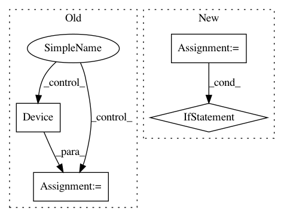

bfb5089ed59f1df8cf53a3b517ac6b091f539a26,homeassistant/components/device_tracker/nmap_tracker.py,NmapDeviceScanner,_update_info,#NmapDeviceScanner#,81
Before Change
else:
mac = _arp(host.ipv4)
if mac:
device = Device(mac, name)
self.last_results.append(device)
_LOGGER.info("nmap scan successful")
return True
except NmapParserException as parse_exc:
After Change
if host.last_update + self.home_interval > now:
exclude_targets.add(host)
if len(exclude_targets) > 0:
target_list = [t.ip for t in exclude_targets]
options += " --exclude {}".format(",".join(target_list))
nmap = NmapProcess(targets=self.hosts, options=options)
nmap.run()
if nmap.rc == 0:
if self._parse_results(nmap.stdout):
self.last_results.extend(exclude_targets)
else:
self.last_results = []
_LOGGER.error(nmap.stderr)
return False
In pattern: SUPERPATTERN
Frequency: 4
Non-data size: 4
Instances
Project Name: home-assistant/home-assistant
Commit Name: bfb5089ed59f1df8cf53a3b517ac6b091f539a26
Time: 2015-03-08
Author: andyt05@gmail.com
File Name: homeassistant/components/device_tracker/nmap_tracker.py
Class Name: NmapDeviceScanner
Method Name: _update_info
Project Name: home-assistant/home-assistant
Commit Name: edf500e66b9122837c2e46f4615a89aa058e10ec
Time: 2017-04-11
Author: paulus@paulusschoutsen.nl
File Name: homeassistant/components/media_player/openhome.py
Class Name:
Method Name: setup_platform
Project Name: onnx/onnx-tensorflow
Commit Name: 054095d922edda5134e520522bc82a1b95cc5bd4
Time: 2020-09-09
Author: smonov@gmail.com
File Name: onnx_tf/backend.py
Class Name: TensorflowBackend
Method Name: run_node
Project Name: home-assistant/home-assistant
Commit Name: 4ccedca3e5cbd98ad8149d5ebed45d37ad09225a
Time: 2015-09-12
Author: paulus@paulusschoutsen.nl
File Name: homeassistant/components/device_tracker/__init__.py
Class Name: DeviceTracker
Method Name: __init__